library(tidyverse)
library(ggplot2)
library(readxl)
library(stringr)
library(forcats)
library(maps)
library(ggthemes)
knitr::opts_chunk$set(echo = TRUE, warning=FALSE, message=FALSE)Final Project Assignment
final_project
laurenzichittella
VAERS
vaccine_safety
Trends in VAERS Reporting for Influenza Vaccine, 2017- 2021
Trends in VAERS Reporting for Influenza Vaccine, 2017- 2021
The Vaccine Adverse Event Reporting System (VAERS) was established by the Centers for Disease Control and Prevention (CDC) and Food and Drug Administration (FDA) to monitor the safety of vaccines licensed in the United States. Anyone can report to VAERS and data is not filtered or validated. In this analysis, we take advantage of this fact and utilize VAERS to measure vaccine bias in the US between 2017 and 2021.
Introduction
The Vaccine Adverse Event Reporting System (VAERS), a collaborative effort between the Centers for Disease Control and Prevention (CDC) and the Food and Drug Administration (FDA), serves as a crucial monitoring system for ensuring the safety of licensed vaccines in the United States. Its primary function involves the collection and analysis of reports from the public regarding adverse events associated with vaccination, with the aim of identifying potential signals that require further investigation.
All data submission to VAERS is voluntary and can be made by any member of the public, including patients, healthcare professionals, manufacturers, and guardians. Reports are not filtered or excluded. With this, VAERS also added potential use in measuring vaccine biases, particularly for vaccines that possess a well-established track record of safety and efficacy. In this analysis, we explore the use of VAERS for this purpose by measuring geographic trends in reporting between 2017 and 2021 following influenza immunization, a vaccine that has been safely administered in the US for over five decades.
# ----------------------- Code chunk 1 -----------------------------------
# Import raw VAERS data, process, and combine to create one dataset for all report years
# FUNCTION - import VAERS vax table
read_vaersvax <- function(dir_path, file_year){
read_csv( paste0(dir_path, file_year, 'VAERSVAX.csv')
, col_types = cols( col_integer()
, col_character()
, col_character()
, col_character()
, col_character()
, col_character()
, col_character()
, col_character())) %>%
mutate( VAERS_YEAR= file_year)%>%
filter(str_detect(VAX_TYPE, fixed("FLU", ignore_case=TRUE)))%>%
group_by(VAERS_YEAR, VAERS_ID)%>%
summarise(n_fluvax = n()) }
# FUNCTION - import VAERS patient table
read_vaersdata <- function(dir_path, file_year){
read_csv( paste0(dir_path, file_year, 'VAERSDATA.csv')
, col_types = cols( col_integer()
, col_date(format= "%m/%d/%Y")
, col_character()
, col_double()
, col_integer()
, col_double()
, col_character()
, col_date(format= "%m/%d/%Y")
, col_character()
, col_character()
, col_date(format= "%m/%d/%Y")
, col_character()
, col_character()
, col_character()
, col_integer()
, col_character()
, col_character()
, col_character()
, col_date(format= "%m/%d/%Y")
, col_date(format= "%m/%d/%Y")
, col_integer()
, col_character()
, col_character()
, col_character()
, col_character()
, col_character()
, col_character()
, col_character()
, col_character()
, col_integer()
, col_date(format= "%m/%d/%Y")
, col_character()
, col_character()
, col_character()
, col_character() )) %>%
mutate( AGE_GROUP = case_when( AGE_YRS >= 0 & AGE_YRS <= 17 ~ ' < 18 years'
, AGE_YRS >= 18 & AGE_YRS <=64 ~ '>= 18 years'
, TRUE ~ NA_character_)
, STATE = str_to_upper(STATE)
, VAX_YEAR = year(VAX_DATE)
, SEVER_AE = case_when( HOSPITAL=="Y"| DIED =="Y" |L_THREAT =="Y"|DISABLE=="Y" ~'SEVERE', TRUE ~ 'NOT SEVERE/UNKNOWN'))%>%
select (VAERS_ID, STATE, AGE_GROUP, SEX, VAX_YEAR,SEVER_AE)}
# FUNCTION - join VAERS vax and patient table and summarize
join_vaers<- function(dir_path, file_year) {
left_join(read_vaersvax(dir_path, file_year)
, read_vaersdata(dir_path, file_year)
, by =c("VAERS_ID") ) %>%
group_by(VAERS_YEAR, VAX_YEAR, STATE, AGE_GROUP, SEX, SEVER_AE) %>%
summarise(vaers_reports = n()) }
# Define location of project data and create analysis dataset by importing, processing, and combining files
dir_path <- 'laurenzichittella_finalprojectdata/'
base_vaers <-
bind_rows( join_vaers(dir_path, 2017)
, join_vaers(dir_path, 2018)
, join_vaers(dir_path, 2019)
, join_vaers(dir_path, 2020)
, join_vaers(dir_path, 2021))Data Description
In the VAERS database, a case represents a unique report submitted alongside information on:
- the person vaccinated, the timing of vaccination and symptom onset, the severity of adverse event
- the name, route, and manufacture of vaccine(s) received
- clinical codes representing the signs and symptoms of the adverse event
Each group of information is captured in its own tables. Tables are consequently partitioned by reporting year, with data from 1990-2023 available to the public.
The case of the original database was not preserved in this analyse to allow for efficient capture of information for multiple report years. Instead, a cohort of unique reports with influenza vaccine exposure was extracted from the vaccine table and joined to other dimensions to add detail on the age of vaccinee , sex of vaccinee, state where vaccine administered, year of vaccination, and severity of adverse event. Finally, this data was summarized by combinations of these variables to get the number of reports associated with each set of values. This process was performed for each report year 2017 - 2021 separately and the final summarized datasets with combined to create a single analytic file.
Values of age were categorized as missing, <18, >= 18. Severity of adverse event was assigned as severe or not/unknown based on whether hospitalization, disability, or death resulted or the event was life threatening. The final analytic file represented 54,131 distinct VAERS reports. Of these reports,
22,929 had missing age information9,547 had unknown state6,369 had missing vaccination date4,616 had an unknown Sex
However, since this analysis centered on the quantity of reports rather than quality, records with missing information were retained unless otherwise noted in subsequent sections of this analysis.
# ----------------------- Code chunk 2 -----------------------------------
# Output basic descriptives for analysis dataset including:
# columns, rows, VAERS records, records with missing values by variable
# Extract column names, sample print, number rows, number of VAERS reports captured
colnames(base_vaers)[1] "VAERS_YEAR" "VAX_YEAR" "STATE" "AGE_GROUP"
[5] "SEX" "SEVER_AE" "vaers_reports" head(base_vaers) nrow(base_vaers)[1] 5826 sum(base_vaers$vaers_reports)[1] 54131# FUNCTION - output count of reports with missing values per variable
missing_sum <- function(x) {
missing <- base_vaers %>%
filter(is.na({{x}}))
sum(missing$vaers_reports)
}
# Execute function to get report counts with missing age, state, and vaccine date information
missing_sum(AGE_GROUP) [1] 22929missing_sum(STATE) [1] 9547missing_sum(VAX_YEAR)[1] 6369#Get of reports by Sex variable value
base_vaers %>%
group_by(SEX)%>%
summarise(vaers_reports = sum(vaers_reports))Results
Distribution of VAERS Reports by Report Year by Vaccine Date, Age, Sex, and Severity of Adverse Event
VAERS reports were first characterized to understand the quality of the underlying data and the cohort being evaluated. Characteristics were measured by VAERS report year to understand the distribution of records, amount of missing information, and demographics of the study population.
The number of reports by remained fairly stable from 2017 through 2019. In 2020, there was a marked increase in reports followed by a slight decrease in 2021 (Figure 1). In general the timing of vaccination was tightly coupled with that of reporting. Most reports were completed within a year of the vaccine administration date.(Figure 2). The majority of the population was > 18 years of age (Figure 3) and filed for females (Figure 4). Non-serious adverse events were reported more frequently than severe (Figure 5).
Reports with missing information were more prevalent in 2020 relative to other years. This was observed across all variables where missing values were permitted, including vaccine date and age (Figures 6 & 7).
# ----------------------- Code chunk 3 -----------------------------------
# Distribution by reports by select variables
# Plot the number of reports by report year
base_vaers %>%
group_by(VAERS_YEAR) %>%
summarise(vaers_reports = sum(vaers_reports)) %>%
ggplot(aes(x = factor(VAERS_YEAR), y = vaers_reports, fill = factor(VAERS_YEAR))) +
geom_col() +
labs(title = "Figure 1 - Number of VAERS Reports by Year",
x = "Report Year",
y = "Number of Reports",
fill = "Report Year" ) 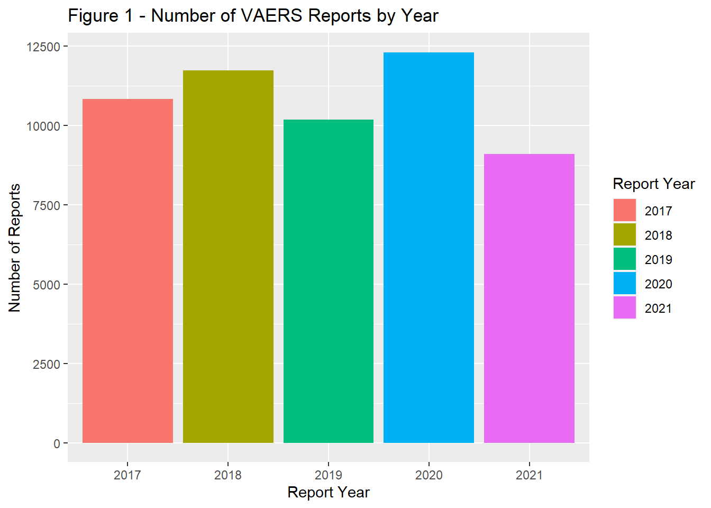
# Plot the number of reports by vaccination date year part
base_vaers %>%
mutate(VAX_YEAR = if_else(is.na(VAX_YEAR), "Missing", if_else(VAX_YEAR >= 2014, as.character(VAX_YEAR), "2013 or earlier"))) %>%
group_by(VAERS_YEAR, VAX_YEAR) %>%
summarise(vaers_reports = sum(vaers_reports)) %>%
mutate(VAX_YEAR = fct_relevel(VAX_YEAR, "Missing", "2013 or earlier")) %>%
ggplot(aes(x = VAX_YEAR, y = vaers_reports, fill = factor(VAERS_YEAR))) +
geom_col() +
labs(title = "Figure 2 - Number of VAERS Reports by Year of Vaccination and Report Year",
x = "Vaccine Year",
y = "Number of Reports",
fill = "Report Year")+
theme(axis.text.x = element_text(angle = 90, hjust = 1)) 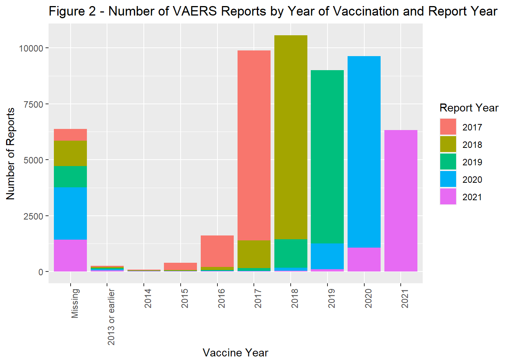
#Distribution of reports by report year and age group
base_vaers %>%
mutate(AGE_GROUP = if_else(is.na(AGE_GROUP), "Missing", AGE_GROUP)) %>%
group_by(VAERS_YEAR, AGE_GROUP) %>%
summarise(vaers_reports = sum(vaers_reports)) %>%
ggplot(aes(x = VAERS_YEAR, y = vaers_reports, fill = AGE_GROUP)) +
geom_col() +
labs(title = "Figure 3 - Number of VAERS Reports by Report Year and Age Group",
x = "Report Year",
y = "Number of Reports",
fill = "Age Group") +
theme(axis.text.x = element_text(angle = 90, hjust = 1)) +
facet_wrap(~AGE_GROUP, scales = "fixed", ncol = 3)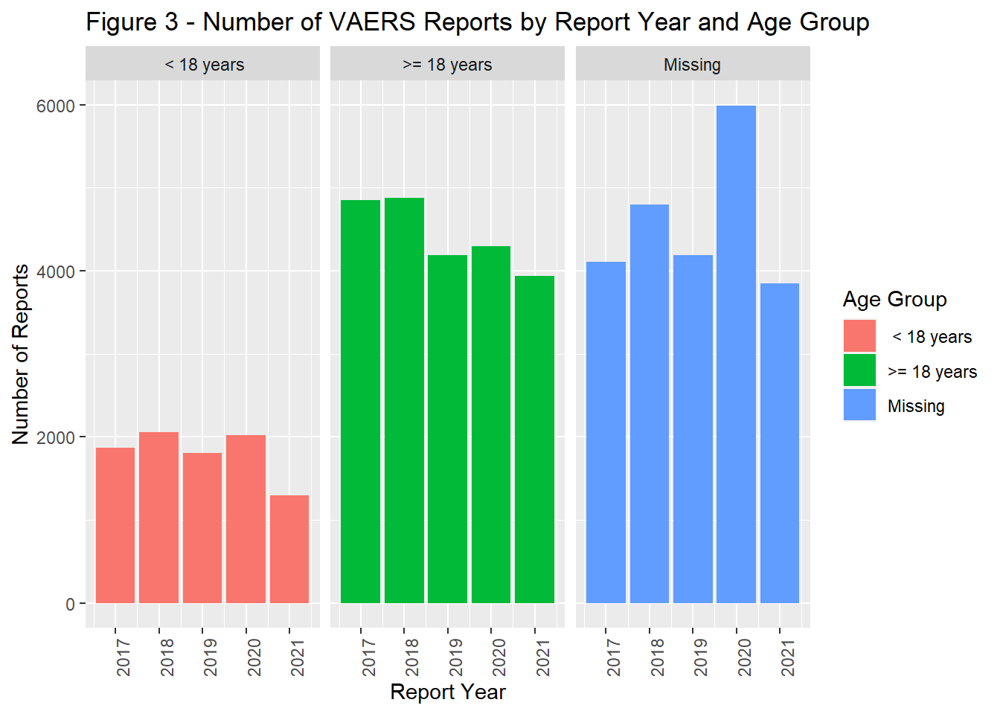
#Distribution of reports by report year and sex
base_vaers %>%
group_by(VAERS_YEAR, SEX) %>%
summarise(vaers_reports = sum(vaers_reports)) %>%
ggplot(aes(x = VAERS_YEAR, y = vaers_reports, fill = SEX)) +
geom_col(position = "dodge") +
labs(title = "Figure 4 - Number of VAERS Reports by Report Year and Sex",
x = "Report Year",
y = "Number of Reports",
fill = "Sex") +
theme(axis.text.x = element_text(angle = 90, hjust = 1)) +
facet_wrap(~SEX, scales = "fixed", ncol = 3)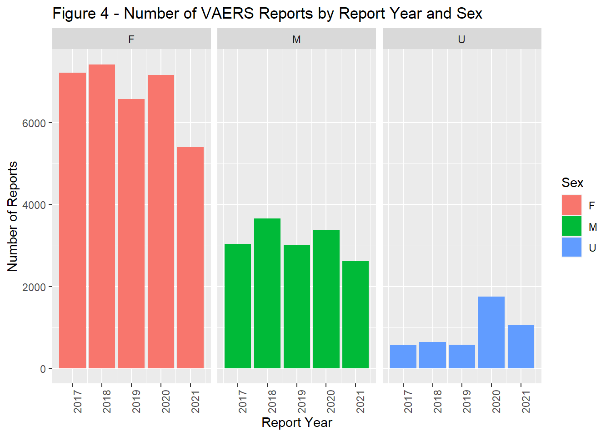
#Distribution of reports by report year and severe AE status
base_vaers %>%
group_by(VAERS_YEAR, SEVER_AE) %>%
summarise(vaers_reports = sum(vaers_reports)) %>%
ggplot(aes(x = VAERS_YEAR, y = vaers_reports, fill = SEVER_AE)) +
geom_col() +
facet_wrap(~SEVER_AE, ncol = 2, scales = "free_y") +
labs(title = "Figure 5- Number of Reports by Year and Severity of Adverse Event",
x = "Report Year",
y = "Number of Reports",
fill = "Severe Adverse Event Status") +
theme(axis.text.x = element_text(angle = 90, hjust = 1)) +
guides(fill = FALSE)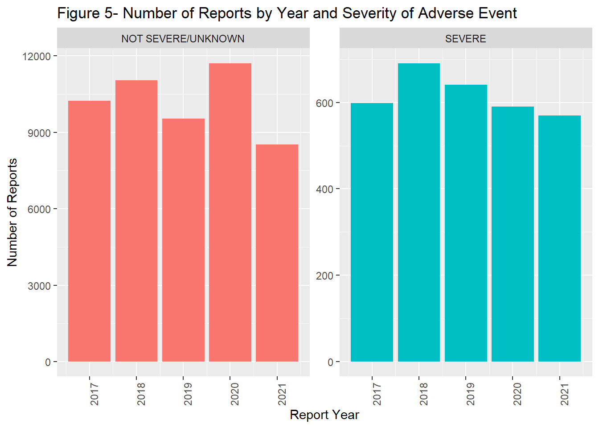
# Output piechart of missing vax year counts by VAERS report year
base_vaers %>%
filter(is.na(VAX_YEAR)) %>%
group_by(VAERS_YEAR) %>%
summarize(missing_vaxyear = sum(vaers_reports)) %>%
ggplot(aes(x = "", y = missing_vaxyear, fill = as.factor(VAERS_YEAR))) +
geom_bar(stat = "identity", width = 1) +
geom_text(aes(label = missing_vaxyear), position = position_stack(vjust = 0.5)) +
coord_polar(theta = "y") +
labs(title = "Figure 6 -Missing Values of Vaccination Year by Report Year",
x = NULL,
y = NULL,
fill = "Report Year") +
theme_void() +
theme(legend.position = "bottom")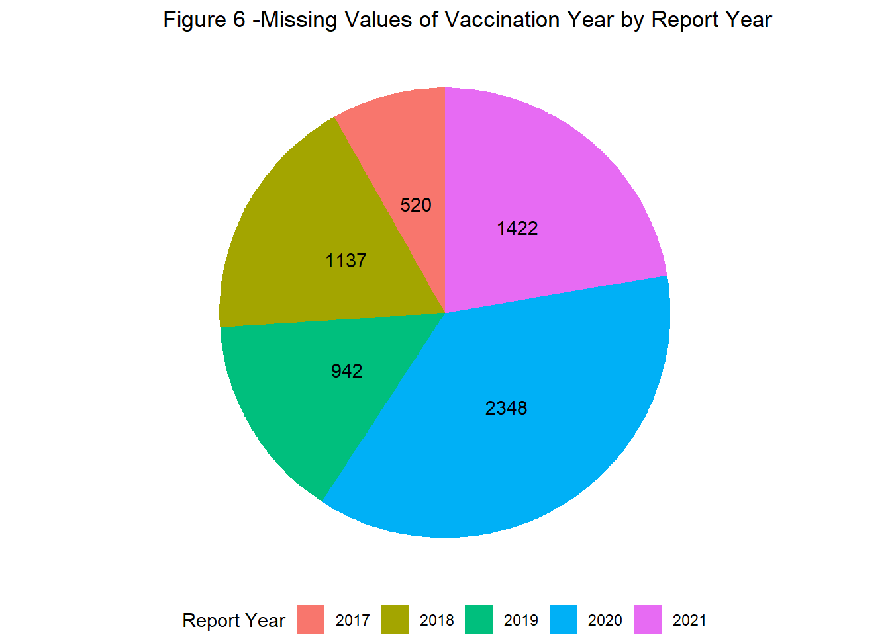
# Piechart of missing AGE_GROUP counts by VAERS report year
base_vaers %>%
filter(is.na(AGE_GROUP)) %>%
group_by(VAERS_YEAR) %>%
summarize(missing_age = sum(vaers_reports)) %>%
ggplot(aes(x = "", y = missing_age, fill = as.factor(VAERS_YEAR))) +
geom_bar(stat = "identity", width = 1) +
geom_text(aes(label = missing_age), position = position_stack(vjust = 0.5)) +
coord_polar(theta = "y") +
labs(title = "Figure 7 - Missing Values of Age by Report Year",
x = NULL,
y = NULL,
fill = "Report Year") +
theme_void() +
theme(legend.position = "bottom")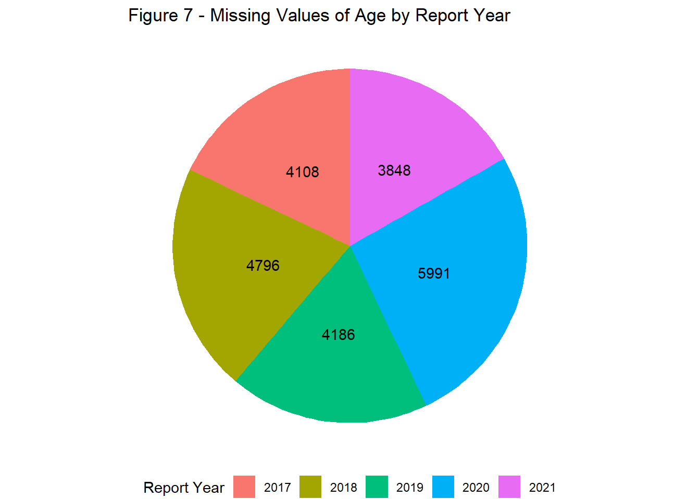
Distribution of VAERS Reports by State
Regional differences in the distribution of reports were evaluated for 2017-2021 combined, excluding records with missing or invalid state values (n = 44,388).
Report counts ranged significantly across the US landscape with the primary driver of differences being each states population (Figure 9). California, Texas, Florida, New York, and Pennsylvania had the most reports total and remained in the top ranks through the study period (Figures 10 - 14).
# ----------------------- Code chunk 4 -----------------------------------
# Distribution by state with mapped results
# Prep data to create map
# Create a crosswalk to link abbreviation in source to full state name in map file
state_lookup <- data.frame(state = toupper(state.abb),
state_name = state.name,
stringsAsFactors = FALSE)
# Update VAERS source to add state name, convert to lower for join
base_vaers_map <- base_vaers %>%
mutate(STATE = ifelse(STATE == 'DC', 'MD', STATE)) %>%
left_join(state_lookup, by = c("STATE" = "state")) %>%
filter(!is.na(state_name))%>%
mutate(state_name = tolower(state_name))
# Calculate n and % records removed because of missing, non-continental, or non matching states
sum(base_vaers$vaers_reports) - sum(base_vaers_map$vaers_reports)[1] 9743 (sum(base_vaers$vaers_reports) - sum(base_vaers_map$vaers_reports))/sum(base_vaers_map$vaers_reports)*100[1] 21.94963 # Load map data
map_data <- map_data("state")
# Join map to VAERS
vaers_map <- base_vaers_map %>%
group_by(state_name) %>%
summarise(vaers_reports = sum(vaers_reports)) %>%
left_join(map_data, by = c("state_name" = "region"))
# Plot distribution of total counts across continental US
ggplot(vaers_map, aes(x = long, y = lat, group = group, fill = vaers_reports)) +
geom_polygon() +
scale_fill_gradient(low = "lightpink", high = "red", name = "VAERS Reports") +
labs(title = "Figure 8 - Number of Reports by State",
subtitle = "Report Years 2017 - 2021 Combined",
fill = "Number of Reports")+
labs(fill = "") +
theme(panel.background = element_blank(), axis.line = element_blank())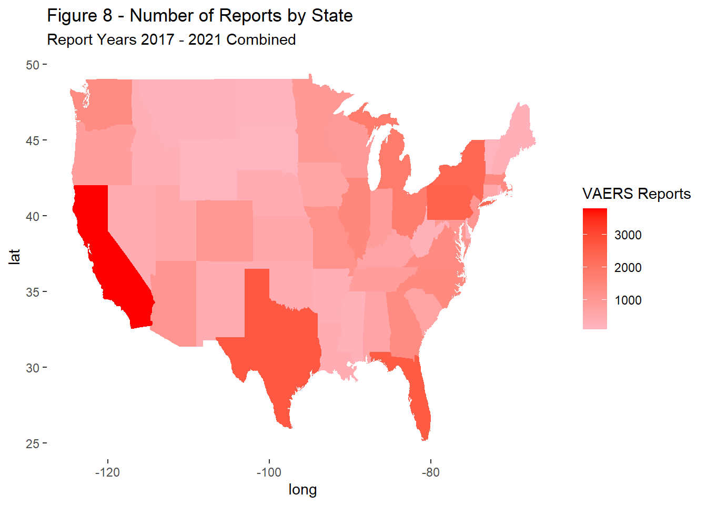
# Evaluate distribution of top 5 states over time
topn_states <- base_vaers_map %>%
group_by(state_name) %>%
summarise(total_vaers_reports = sum(vaers_reports)) %>%
arrange(desc(total_vaers_reports)) %>%
mutate(rank = rank(-total_vaers_reports))%>%
left_join(base_vaers_map, by = c("state_name"))
# FUNCTION - graph trends over report year by each state highlighted versus others in grey
state_dist_year <- function(state, figure) {
topn_states %>%
group_by(state_name, VAERS_YEAR) %>%
summarise(vaers_reports = sum(vaers_reports)) %>%
mutate(highlight = ifelse(state_name == state, "Highlighted", "Other")) %>%
ggplot( aes(x=VAERS_YEAR, y=vaers_reports, group=state_name, color=highlight)) +
geom_line() +
scale_color_manual(values = c("Highlighted" = "red", "Other" = "lightgrey")) +
scale_size_manual(values=c(1.5,0.2)) +
theme(legend.position="none") +
ggtitle(paste0(figure, "Reports Counts 2017 - 2021, ", str_to_title(state))) +
labs( x = "Report Year",
y = "Number of Reports")
}
# Execute funtion for top 5 states with highest counts of VAERS reports
state_dist_year("california", "Figure 10 - ") 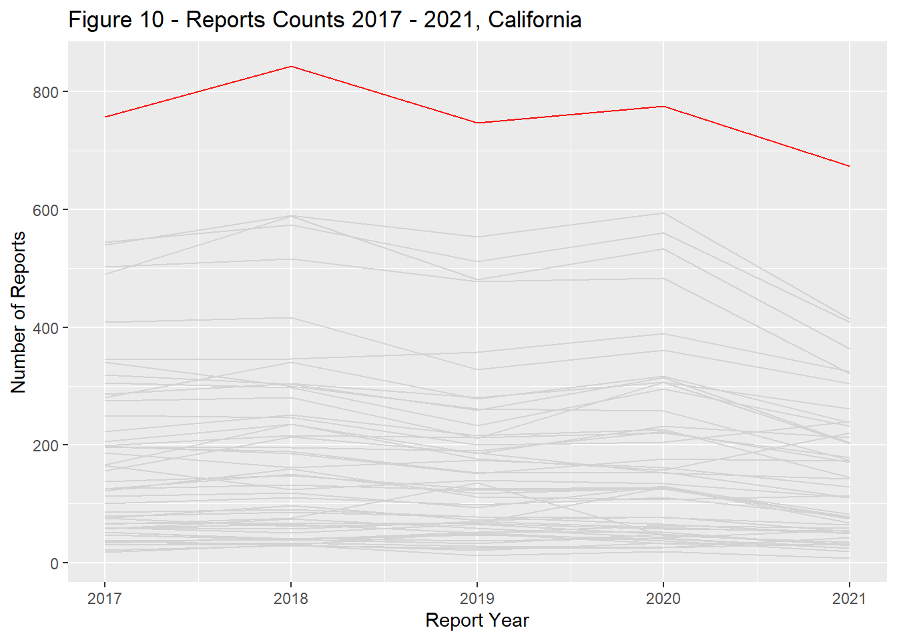
state_dist_year("new york", "Figure 11 - ") 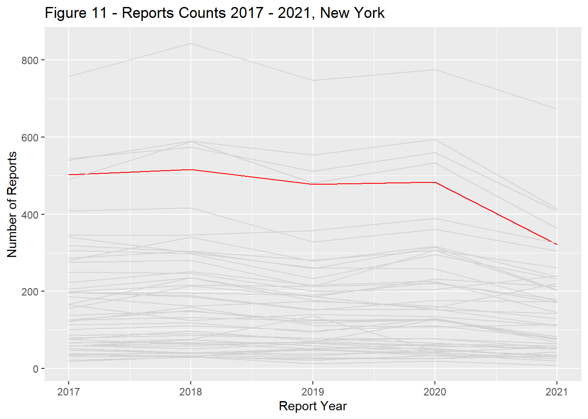
state_dist_year("florida", "Figure 12 - ") 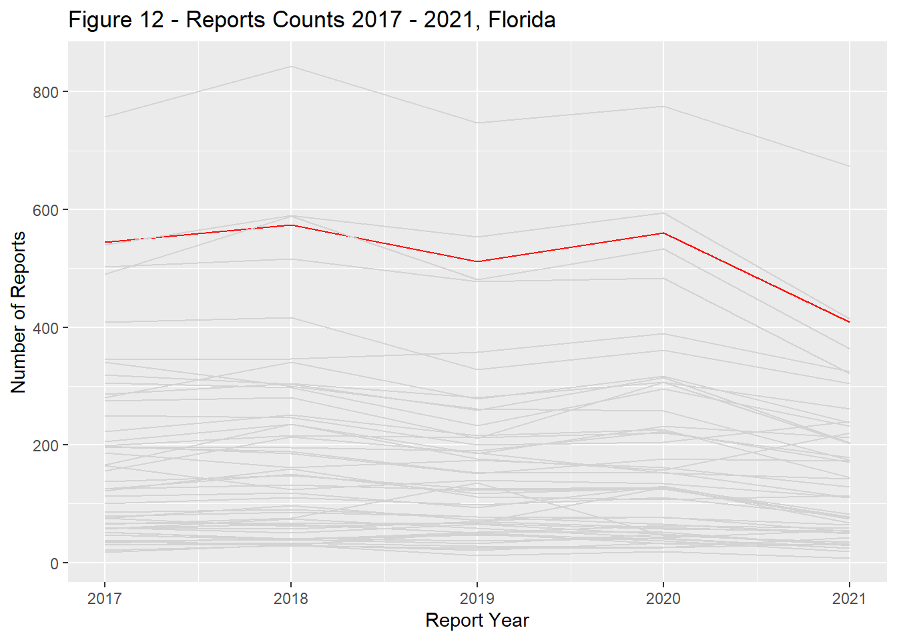
state_dist_year("pennsylvania", "Figure 13 - ") 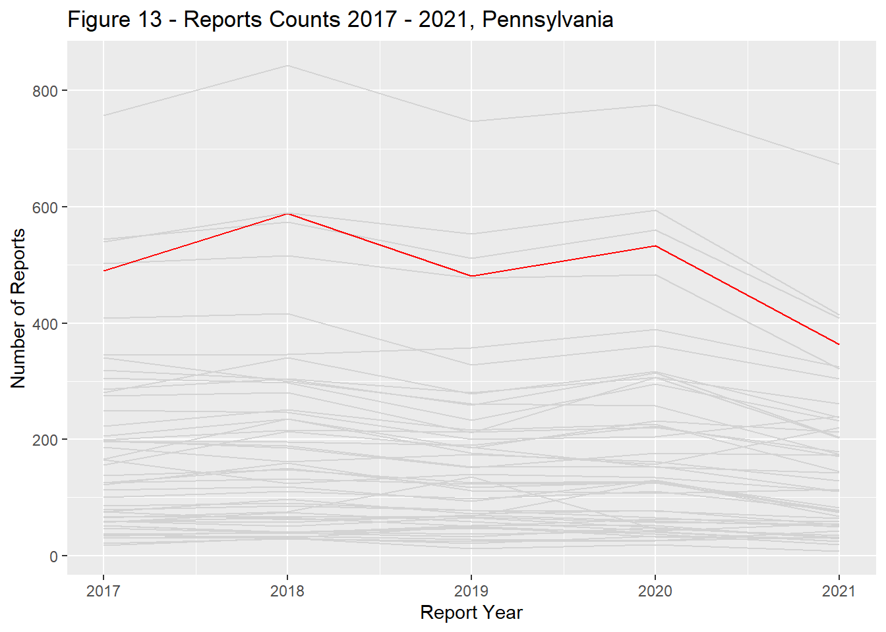
state_dist_year("texas", "Figure 14 - ") 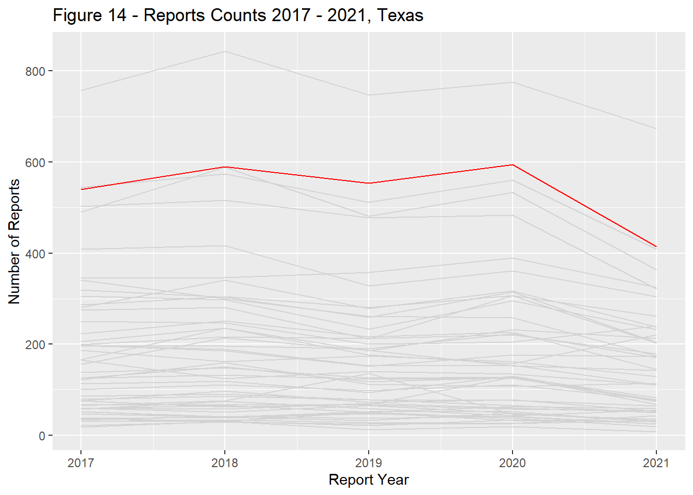
Correlation between Reporting and Coverage Rates by State
To account for differences in population size, subsequent analysis evaluated rates rather than counts. Report rates were measured per 10,000 vaccines. Coverage rates were based on previously published data from the CDC. Rates were grouped for the time period 2017-2021 and evaluated by state.
Variation was observed across states in terms of reporting and coverage rates (Figure 15 & 16) but a correlation between the two was not visible in this analysis (Figure 17). That said, in select states, the relationship between coverage and reporting were very different, indicating a negative bias in states like Wyoming, Alaska, Idaho, and Vermont and a positive one in Massachusetts and Rhode Island.
# ----------------------- Code chunk 5 -----------------------------------
# Normalized report
#Import and reformat flu coverage data
flu_coverage <-
read_csv("laurenzichittella_finalprojectdata/Influenza_Vaccination_Coverage_for_All_Ages__6__Months_.csv"
, col_names = c("del", "del", "state_name", "del", "season", "del", "del", "age_group", "cvg_rate", "del", "del"))%>%
select(!contains("del")) %>%
filter( season %in% c('2016-17', '2017-18', '2018-19', '2019-20', '2020-21')
, (!str_detect(state_name, 'Region'))
, state_name != 'United States'
, age_group %in% c('≥6 Months'))%>%
mutate( measure = "cvg_rate"
, year = as.numeric(substr(season, 1, 4)) + 1
, value = as.numeric(if_else(cvg_rate=="NR †", "0", cvg_rate))
, state_name = tolower(state_name)
, state_name = ifelse(state_name == 'district of columbia', 'maryland', state_name))%>%
filter(value > 0)%>%
group_by(state_name, year, measure)%>%
summarise(value = max(value))%>%
group_by(state_name, measure)%>%
summarise(value = mean(value))
#Import and reformat 2019 pop estimate table
population_2019 <- read_csv( "laurenzichittella_finalprojectdata/SCPRC-EST2019-18+POP-RES.csv"
, skip =2
, col_names = c("del", "del", "del", "del", "state_name", "pop2019", "popadult2019", "del"))%>%
select(!contains("del")) %>%
filter( state_name != 'United States'
, state_name != 'Puerto Rico Commonwealth')%>%
mutate( state_name = tolower(state_name)
, state_name = ifelse(state_name == 'district of columbia', 'maryland', state_name)
, measure = 'population'
, value = pop2019)%>%
group_by(state_name, measure)%>%
summarize(value = sum(value))
# Prep VAERS data for combining
premerge_n <- base_vaers_map%>%
mutate( state = tolower(state_name)
, measure = "vaers_reports")%>%
group_by(state_name, STATE, measure)%>%
summarise(value = sum(vaers_reports))%>%
mutate(value = as.double(value))%>%
group_by(state_name, measure)%>%
summarize(value = mean(value))
# Combine population, vax rate, and vaers counts data - pivot wider to calculate reporting rate by state
combine_measures <-
bind_rows( flu_coverage
, population_2019
, premerge_n)%>%
pivot_wider(names_from = measure, values_from = value)%>%
mutate( vax_n = ((cvg_rate*population)/100)
, rpt_rate10000 = (vaers_reports/vax_n)*10000)
combine_measures%>%
left_join(map_data, by = c("state_name" = "region"))%>%
ggplot(aes(x = long, y = lat, group = group, fill = cvg_rate)) +
geom_polygon() +
scale_fill_gradient(low = "yellow", high = "red", name = "Coverage Rate") +
labs(title = "Figure 15 - Mean Influenza Coverage Rate, 2017 - 2021",
fill = "Coverage Rate")+
labs(fill = "") +
theme(panel.background = element_blank(), axis.line = element_blank()) 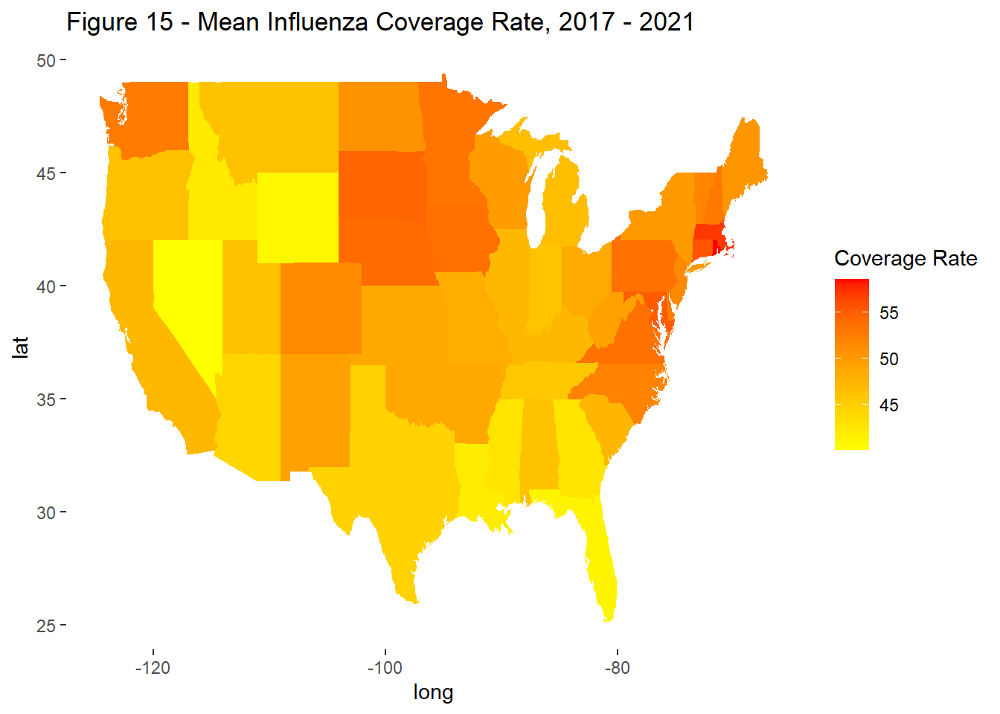
combine_measures%>%
left_join(map_data, by = c("state_name" = "region"))%>%
ggplot(aes(x = long, y = lat, group = group, fill = rpt_rate10000)) +
geom_polygon() +
scale_fill_gradient(low = "yellow", high = "red", name = "Report Rate") +
labs(title = "Figure 16 - Adverse Event Report Rates per 10,000, 2017 - 2021",
fill = "Report Rate")+
labs(fill = "") +
theme(panel.background = element_blank(), axis.line = element_blank())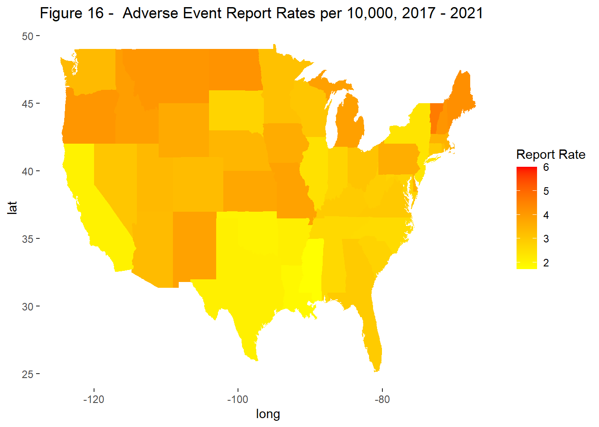
# Plot report by coverage rate
# linear trend + confidence interval
ggplot(combine_measures, aes(x=cvg_rate, y=rpt_rate10000)) +
geom_point() +
geom_smooth(method=lm , color="red", fill="#69b3a2", se=TRUE) +
geom_label(data=combine_measures %>% filter((rpt_rate10000>3.5&cvg_rate<43)|rpt_rate10000>4.5|cvg_rate>55),
aes(label = state_name),
nudge_x = 0.5,
nudge_y = 0.3,
angle = 45) +
xlab("Influenza Coverage Rate") +
ylab("VAERS Reporting Rate per 10,000") +
ggtitle("Figure 17 - Relationship between Influenza Coverage and Adverse Event Reporting Rates, 2017 - 2021")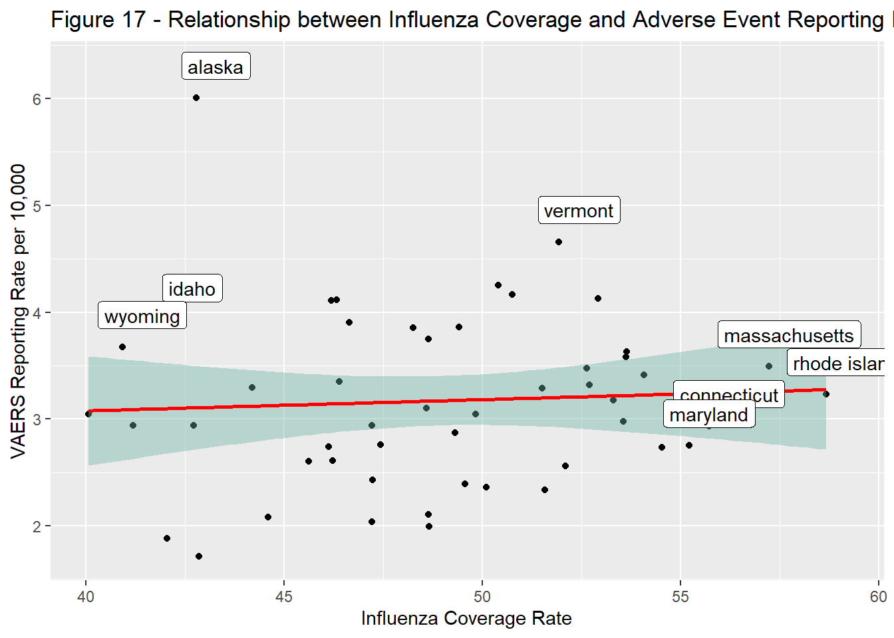
Conclusion
This analysis used VAERS data to investigate influenza vaccine safety reporting trends in the United States from 2017 to 2021 as a proxy bias toward vaccination. The primary focus was on geographical variation between rates of influenza coverage and reporting. No clear correlation was found. However, the relationship between these measures in select states suggested the existence of negative and positive bias. Further investigation, with better study design and more statistical rigor, is warranted.
References
The Vaccine Adverse Event Reporting System Data https://vaers.hhs.gov/data.html
Center for Disease Control and Prevent Influenza Vaccine Coverage for All Ages (6+ Months) https://data.cdc.gov/w/vh55-3he6/tdwk-ruhb?cur=DD3yv0A5LqV
The R Graph Gallery-https://r-graph-gallery.com/
R Language as programming language